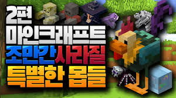
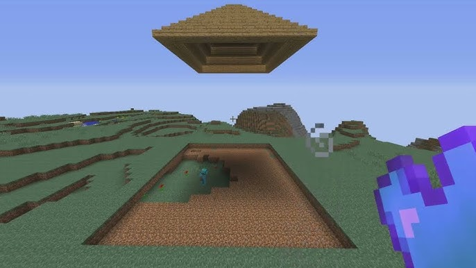
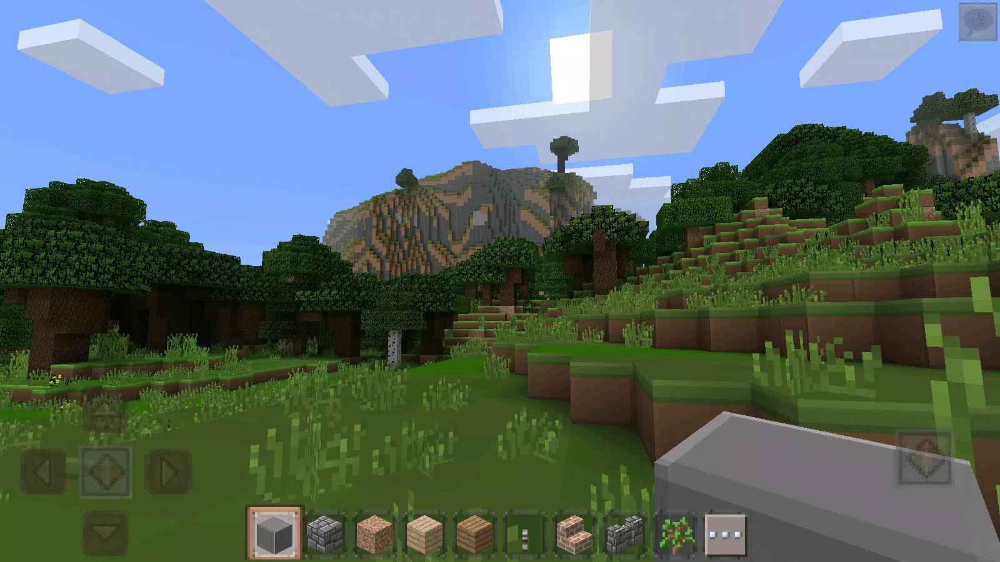

Майнкрафт - это игра.
Год выхода: 2009
Разработчик: Mojang
Оплатить - $99.99
Minecraft — это знаменитая песочница, где игроки могут исследовать бесконечные процедурно-генерируемые миры, добывать ресурсы, создавать инструменты и строить практически всё, что только можно вообразить. От простых хижин до величественных замков, от подземных лабиринтов до летающих островов — пределов для творчества не существует.
Игра предлагает несколько режимов: выживание, где нужно добывать ресурсы и защищаться от монстров; творческий режим с неограниченными ресурсами; хардкорный режим для настоящих испытаний; и многопользовательский режим для совместной игры с друзьями.
С момента своего выхода в 2011 году Minecraft стал культурным феноменом, проданным более чем в 238 миллионов копий по всему миру, став самой продаваемой видеоигрой всех времён.
Операционная система: Minix/Windows 12
Процессор: Motorola 6800/Intel Core i11 21900K
Видеокарта: 3D ускоритель Voodoo
Оперативная память: не менее 2 килобайт
Место: 20 йобибайтов
Альтернативно: компьютер Z4



